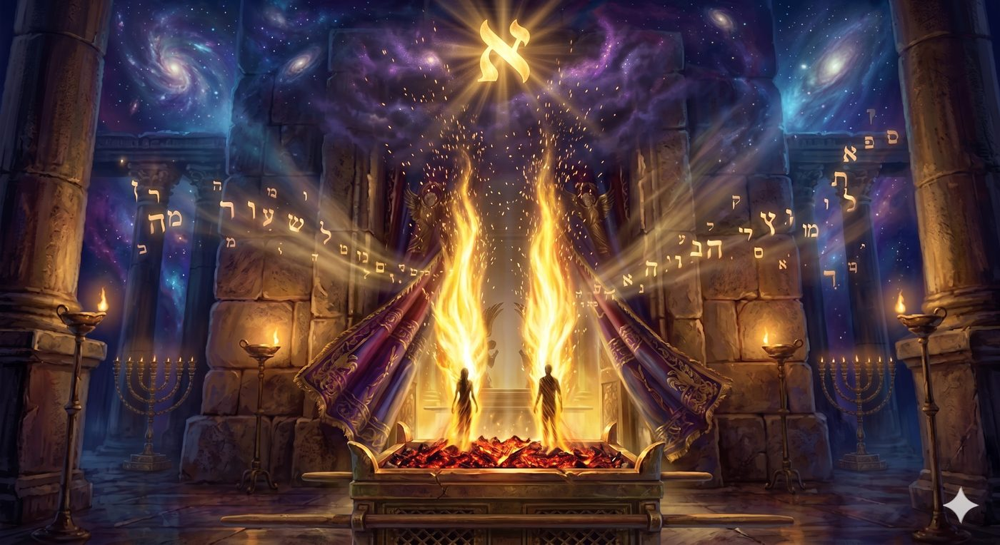
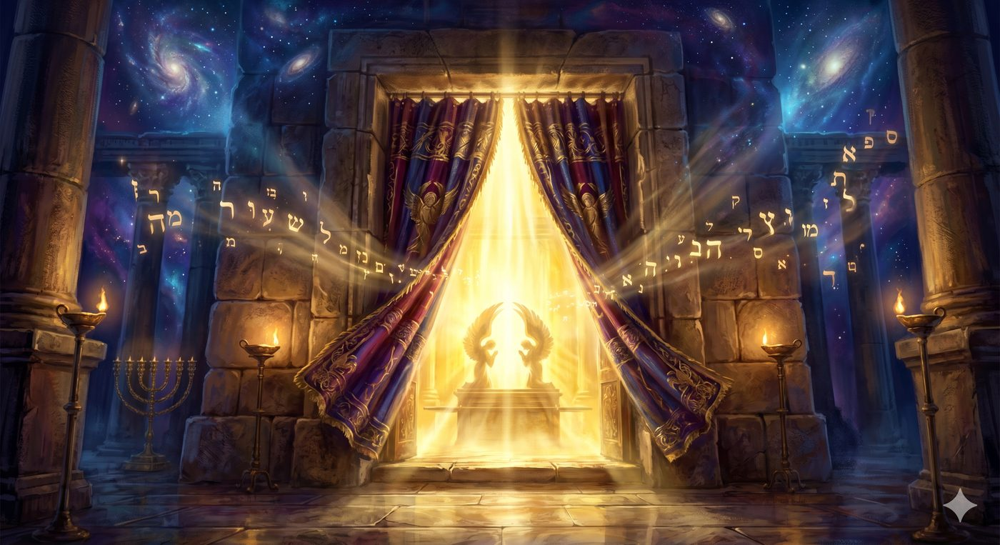
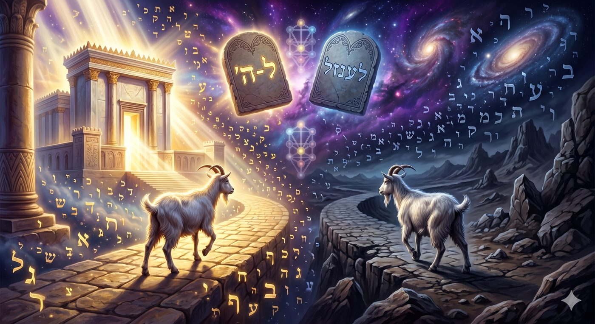
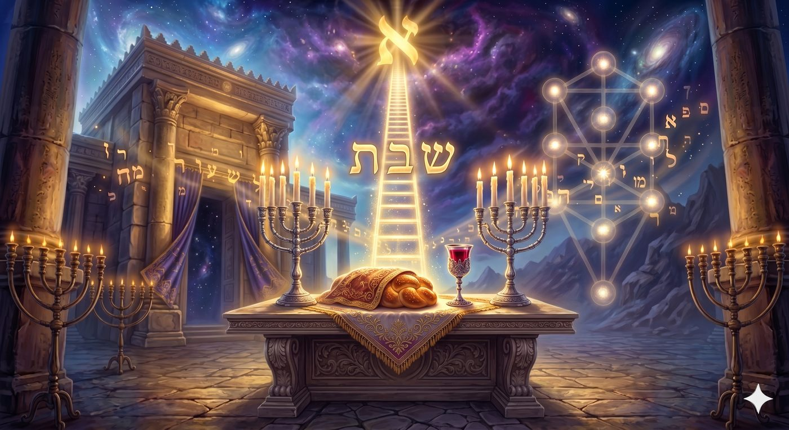
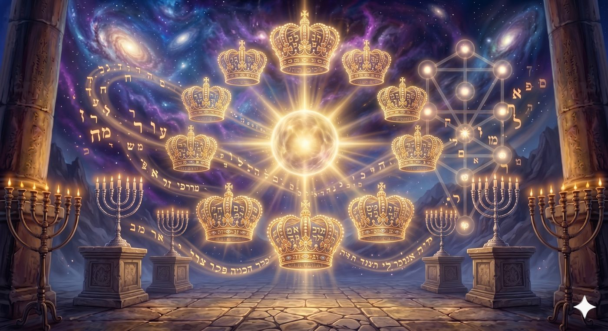
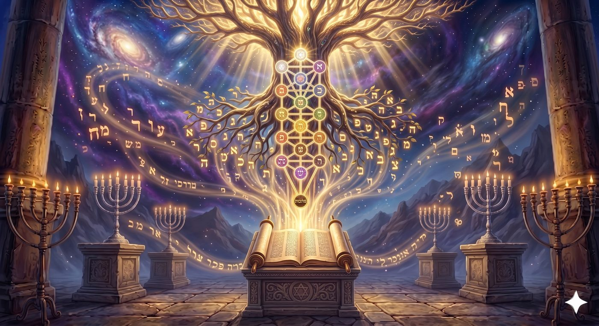

La Vie (Haïm/חיים) après la Mort, ou le Olam Haba pendant la Vie (Haïm/חיים) ?
Il existe dans la Torah des parachiot dont le titre même constitue déjà un enseignement, et dont la lecture inaugure un renversement de la perspective naturelle. Aharé Mot (אחרי מות), « Après la mort », est de celles-ci. La Torah aurait pu ouvrir cette section par tout autre vocable, Vayedaber Hachem el Moché (« L'Éternel parla à Moïse »), comme tant d'autres fois, mais elle a choisi d'inscrire en en-tête, comme un linteau de pierre au-dessus du portail, ces deux mots qui résonnent comme un glas et comme une promesse : Aharé Mot. Après quoi ? Après la mort de qui ? Et que se passe-t-il, précisément, après la mort ?
La mort dont il est question est celle de Nadav et Avihou, les deux fils aînés d'Aharon HaCohen, consumés par un « feu étranger » (ech zara, אש זרה) au moment même où ils s'approchaient du Sanctuaire pour offrir leur encens (Vayikra 10:1-2). Leur disparition, survenue lors du huitième jour d'inauguration du Michkan, avait laissé sur le peuple d’Israël une empreinte indélébile. Mais la Torah, dans sa construction architecturale, ne mentionne cette mort qu'après l'avoir laissée reposer six chapitres durant, pour la réintroduire ici, au seuil du traité le plus élevé du Lévitique faisant état du le service de Yom Kippour, le jour où l'Homme entre vivant dans l'espace de l'éternité.
Le paradoxe est saisissant, la Torah ouvre son enseignement sur l'entrée du Cohen Gadol dans le Kodesh HaKodashim (le Saint des Saints) par la mémoire de deux hommes qui sont morts précisément en voulant s'en approcher. C'est comme si la Torah nous disait :
« Voulez-vous entrer dans la Vie éternelle (Haïm, חיים) ? Alors souvenez-vous d'abord de ceux qui sont morts d'y avoir voulu entrer avec les mauvais réceptacles. »
L'objet de cette étude est d'examiner, avec l'aide du Ciel et de nos Maîtres, la dynamique qui relie la mort de Nadav et Avihou, le service du Cohen Gadol au Kodesh HaKodashim, et la possibilité offerte à chaque âme juive de goûter à la vie du olam haba sans traverser la mort physique.
Nous nous appuierons sur les sources de la mystique juive (le Zohar, les enseignements du Ari z"l, le Nefesh HaHaïm,..), sur les maîtres de la Hassidout (le Sfat Emet, le Chem MiChmouel, le Bné Issah’ar), et sur la pensée juive classique (le Maharal de Prague, le Ramhal), afin de démontrer que le olam haba n'est pas un après de la vie, mais une profondeur de la vie, et que la paracha Aharé Mot enseigne l'art d'y pénétrer les yeux ouverts, sans y laisser son âme.
Aharé Mavet : la vie qui commence après la mort… ou la vie qui la traverse ?
La mort qui est Vie : Nadav, Avihou et la mitat neshika (מיתת נשיקה)
Kodesh HaKodashim : l'espace où la vie n'a plus de frontière
Les deux boucs : deux destinées, deux dimensions de la vie
Shabbat Shabbaton : la brèche hebdomadaire de la vie éternelle
Lifné Hachem : se tenir vivant (Haï, חי) devant la source de toute vie
Atrotehem be-rochehem : les couronnes de vie des Tsadikim (Berakhot 17a)
Ets HaHaïm : la Torah comme pont vivant entre les deux olamot
Le Guilgoul : le cycle de la vie, descendre, remonter, redescendre
Lé-Haïm ! : la avoda quotidienne comme coupe tendue vers le olam haba
Le mot חיים (Haïm) présente en hébreu une singularité grammaticale qui, à elle seule, recèle la thèse de notre étude. La langue sainte possède un nombre à trois valeurs : le singulier, le duel (choum, pour les paires naturelles comme les yeux ou les mains) et le pluriel. Or, le mot Haïm, lorsqu'il désigne « la Vie » comme substantif, est toujours au pluriel. Il existe certes l'adjectif Haï (חי), « vivant » (Haï Hachem, ha-ich ha-hou Haï, etc.), mais pour nommer la Vie elle-même, l'existence d'une personne, l'hébreu ne dit jamais hay : il dit toujours Haïm, au pluriel. Les mekoubalim, et en premier lieu le Nefesh HaHaïm, voient dans cette pluralité grammaticale le signe des « deux vies » superposées : comme si la langue avait inscrit, dans la texture même de sa grammaire, qu'il n'y a pas de vie unique, mais qu'à tout instant et pour chaque être, deux vies se superposent : la vie d'en-bas et la vie d'en-haut, la vie terrestre et la vie éternelle, la vie terrestre et la vie de l'olam haba.
Rabbi Haïm de Volozhin, dans son œuvre maîtresse Nefesh HaHaïm (Chaar I), fait de cette pluralité grammaticale la clef même de la conception juive de l'existence. Contrairement à la vision gréco-romaine qui opposait brutalement le bios (la vie organique) et le zoe (la vie éternelle), et contrairement à la conception chrétienne qui les reporte l'une après l'autre dans la succession temporelle, la Torah enseigne une conception strictement simultanée, les deux vies coexistent en permanence dans chaque instant, comme deux nappes phréatiques superposées dont l'une irrigue l'autre. Le Nefesh HaHaïm précise que l'homme, créé à l'image de D.ieu, porte en lui cette pluralité dès l'origine, car c'est précisément par cette duplicité qu'il se distingue de toute autre créature et qu'il devient capable de tenir debout entre les mondes.
C'est précisément ce que vient signifier la paracha Aharé Mot. En inscrivant en titre « Après la mort », la Torah installe d'emblée le lecteur dans la perspective de la finalité humaine : l'horizon de toute existence humaine est la mort, et par conséquent ce qui se passe après. Mais aussitôt le titre posé, la paracha bascule dans l'immédiat. Le premier verset dit : « Vayedaber Hachem el Moché aharé mot chné bené Aharon be-kar'vatam lifné Hachem va-yamoutou » « Hachem parla à Moïse après la mort des deux fils d'Aharon, lorsqu'ils s'étaient approchés devant Hachem et qu'ils étaient morts » (Vayikra 16:1). Le verbe va-yamoutou (« ils moururent ») est suivi immédiatement par la prescription du service de Yom Kippour, le jour de la Vie.
Le Zohar (III, 56b) relève l'anomalie avec stupeur : pourquoi dire aharé mot (« après la mort ») alors qu'il suffisait de dire be-mot (« à la mort ») ? Le Zohar répond, selon l'expression consacrée par les commentateurs, que « après la mort commence la vie véritable », c'est-à-dire que la vie authentique se dévoile au-delà du seuil. La paracha ne raconte donc pas un événement funèbre du passé. Elle ouvre une porte sur ce qui se tient au-delà du seuil. Et ce « au-delà » n'est pas géographiquement ailleurs, il est ici, accessible à qui sait franchir le passage.
Le Sfat Emet (sur Aharé Mot, 5638) approfondit cette lecture : le mot aharé (אחרי), « après », a la même racine que Aher (אחר), « un autre ». La paracha s'ouvre donc sur l'Autre de la mort, qui n'est autre que la vie supérieure qui attendait, cachée derrière le voile de l'apparence mortelle. Nadav et Avihou n'ont pas simplement cessé de vivre, ils sont entrés dans l'Autre Vie. Et c'est à partir de leur passage, dit le Zohar, que la Torah peut enseigner à Aharon le service qui permettra à tout un peuple d'y goûter sans y périr.
Le mot Haïm, toujours au pluriel en hébreu, enseigne que la vie n'est pas une succession mais une superposition. La paracha Aharé Mot ne nous parle pas de ce qui advient une fois la vie terminée. Elle enseigne ce qui se tient, dès maintenant, derrière le voile de l'évidence, et comment y accéder vivant.
Pour saisir la portée métaphysique de la mort des fils d'Aharon, il faut retourner au récit de Chemini (Vayikra 10:1-2) et lire avec attention les mots qui décrivent leur fin. La Torah dit : « Va-tetsé ech mi-lifné Hachem, va-tokhal otam, va-yamoutou lifné Hachem » « Un feu sortit de devant Hachem et les dévora, et ils moururent devant Hachem ». Ce qui frappe, c'est la répétition de l'expression lifné Hachem (« devant Hachem ») : ils sont morts devant Lui, c'est-à-dire dans l'exacte « géographie » de Sa Présence.
Le Zohar (Aharé Mot III, 56b-57a) enseigne que Nadav et Avihou sont morts par ce que la tradition appelle la mitat neshika (מיתת נשיקה), « la mort par le baiser ». Cette expression bouleversante désigne une forme de trépas réservée aux plus grands des justes, Moché, Aharon, Myriam, selon le Talmud (Baba Batra 17a), dans laquelle l'âme quitte le corps non par violence ou par arrachement, mais par attraction pure : Hachem « embrasse » l'âme, et celle-ci, saisie d'un amour trop intense pour demeurer enfermée dans un corps, s'envole vers sa Source.
Le texte du Zohar nous saisit en nous expliquant qu'au moment où Nadav et Avihou s'approchèrent avec leur encens, leurs âmes « brûlaient de se coller à Lui » (libbam bo'er le-hidavek bo), et que, ne pouvant plus contenir dans leurs réceptacles corporels l'intensité de la lumière qu'ils recevaient, leurs neshamot sortirent d'elles-mêmes à la rencontre du baiser divin. Ils n'ont pas été tués, ils ont été aspirés. La mort, chez eux, n'est pas l'arrêt de la vie mais leur accomplissement, le passage à une dimension de la vie tellement intense qu'elle ne tient plus dans le corps.
Le Ari z"l, dans le Chaar HaPessoukim sur Aharé Mot, ajoute une nuance : Nadav et Avihou, avant leur faute, incarnaient le niveau du Olam HaBrià (le monde de la Création), qui est celui du Trône divin et des neshamot supérieures. Or, ils ont voulu monter encore plus haut, jusqu'au Olam HaAtsilout (le monde de l'Émanation), en prenant l'initiative d'offrir un encens non commandé. Cette montée sans keli (sans réceptacle adéquat) a provoqué, non pas un châtiment, mais un dépassement : ils ont réussi à monter, mais ils ne pouvaient plus redescendre. C'est en ce sens que le Ari z"l écrit : « Metou ve-lo metou », « Ils moururent et ne moururent pas ». Leurs corps furent consumés, mais leurs neshamot furent intégrées à la lumière supérieure.

Nadav et Avihou consumés par le feu divin devant le Sanctuaire : non pas un châtiment, mais la fulgurance d'une mitat neshika, l'âme aspirée par le baiser de Hachem, arrachée à son corps par l'intensité d'une lumière qu'elle ne pouvait plus contenir.
Le Sfat Emet (sur Aharé Mot, 5641) tire de cet épisode un enseignement universel qui dépasse le sort singulier des fils d'Aharon : toute mort, pour le juste, est potentiellement une mitat neshika. Ce qui distingue la mort ordinaire de la mort par le baiser, ce n'est pas l'événement extérieur, l'arrêt du cœur et du souffle, c'est la disposition intérieure de l'âme. Celui qui, toute sa vie, a cultivé la dvékout (l'adhésion « par amour » à Hachem), ne meurt pas : son âme est simplement transférée, comme une flamme qu'on change de bougie, d'un support corporel à un support purement spirituel. La vie, pour lui, continue, sous une modalité plus pure.
Les sages de la guemara (bera’hot 18a) résume le sujet : « HaTsadik be-moto karouï Haï, ve-HaRacha bé-Haïav karouï mèt » « Le Tsadik dans sa mort est appelé vivant, et le méchant dans sa vie est appelé mort ». La vie n'est pas attachée au corps, mais à la qualité de la connexion que l'âme a nouée avec sa Source. Le Tsadik, qui a passé sa vie à tisser cette connexion, voit sa mort physique n'être qu'un changement de régime. Le Racha, qui a rompu la connexion, est déjà mort alors même que son corps respire.
La mort de Nadav et Avihou enseigne que la frontière entre les deux vies n'est pas la cessation du souffle, mais la nature du lien. Ceux qui meurent par le baiser ne cessent de vivre que pour les yeux des autres. Pour eux-mêmes, ils entrent dans la vie plénière. La paracha Aharé Mot nous parle donc d'une mort qui est vie, et c'est sur cette base qu'elle va enseigner la voie d'une vie qui traverse, vivante, le seuil de l'éternité.

Le seuil du Kodesh HaKodashim au Yom Kippour : l'unique instant de l'année où le Cohen Gadol franchit le voile, pénétrant dans cette enclave du olam haba, au cœur même du olam hazé, là où la vie éternelle affleurent déjà, ici et maintenant.
Le cœur géographique et spirituel de la paracha Aharé Mot est le Kodesh HaKodashim (קדש הקדשים), « le Saint des Saints ». C'est là, et là seulement, qu'Aharon le Cohen Gadol est autorisé à pénétrer, et une seule fois par an, le jour de Yom Kippour. La Torah insiste : « Ve-al yavo be-h’ol ett el ha-Kodesh », « Et qu'il n'entre pas en tout temps dans le Saint » (Vayikra 16:2). Pourquoi cette restriction absolue ? Pourquoi être si stricte avec un espace qui, en apparence, n'est qu'une petite pièce vide au fond du Sanctuaire, surmontée de deux kerouvim (chérubins) d'or ?
La réponse des maîtres de la mystique juive est éclairante. Le Zohar (Térouma 138b-140a) et le Chem MiChmouel (sur Aharé Mot, 5671) enseignent que le Kodesh HaKodashim n'appartient pas à la géographie du olam hazé (du monde d'ici-bas). C'est, physiquement situé au centre du Michkan puis du Temple, une enclave du olam haba, dans le tissu de notre monde. C'est pourquoi, dit le Zohar, les mesures du Kodesh HaKodashim étaient miraculeuses : les kerouvim s'étendaient sur dix amot chacun, totalisant vingt amot, dans une pièce qui elle-même ne faisait que vingt amot de large, et pourtant, « meqom ha-aron eino min ha-mida » « l'emplacement de l'Arche n'entrait pas dans la mesure ». L'espace, à cet endroit, cessait d'obéir à ses propres lois : il était contracté (un point mathématique) et infini (il contenait tout Israël devant Hachem) simultanément.
Le Maharal, dans son Tiferet Israël (chap. 38), commente : « Le Kodesh HaKodashim est le lieu où les lois du olam hazé s'effacent, parce que c'est là que le olam haba affleure à la surface du monde créé ». Or, dans le olam haba tel que le définit le Rambam (Hilkhot Téchouva 8), « il n'y a ni manger, ni boire, ni engendrement, ni jalousie, ni rivalité, ni commerce, ni mouvement dans l'espace », bref, aucune des catégories qui définissent la vie biologique de ce monde. La vie du olam haba, ce sont les vies débarrassées de la friction du corporel, la vie qui circulent sans obstacle entre l'âme et sa Source. Le Kodesh HaKodashim dans le Temple, est donc le point d'affleurement de cette vie dans ce monde.
Voici qui explique l'extraordinaire prescription rapportée dans Pirké Avot (5:5) concernant le Temple : « Omedim tsfoufim ou-mishta'havim revahim », « Ils se tenaient serrés [dans la cour, pour la prière] et prosternaient à l'aise ». La tradition dit que, lors des grands pèlerinages de fêtes, aucun Juif ne manquait de place dans le Temple, malgré la foule immense. Pourquoi ? Parce que le Temple n'était pas soumis aux mesures ordinaires de l'espace. La vie qui y circulait appartenait déjà au olam haba.
Le Sfat Emet (sur Aharé Mot, 5644) tire de ceci une conclusion qui éclaire notre chiour : chaque Juif porte en lui un Kodesh HaKodashim intérieur. De même qu'il y a, au centre du Temple, une enclave du olam haba, il y a, au centre de chaque neshama, un point d'affleurement de la vie éternelle. Ce point, la mystique juive l'appelle le yéhida, le cinquième et plus haut niveau de l'âme (après néfech, roua'h, néshama, haya), celui qui ne descend jamais dans le corps mais demeure « en haut ». C'est cette yéhida qui est le Kodesh HaKodashim de l'homme.
Pourquoi Aharon n'y entre-t-il qu'une fois par an ? Parce que, pour y pénétrer, il faut entrer vivant dans la vie du olam haba, ce qui exige une préparation d'une année entière, un dépouillement de tout ce qui relève du olam hazé. Les vêtements d'or du Cohen Gadol sont remplacés par des vêtements de lin blanc, il se plonge cinq fois dans le mikvé, il se purifie par dix sanctifications. Cette préparation est le symbole exact de ce que chaque Juif est invité à accomplir, à sa mesure, chaque jour, pour pouvoir pénétrer, ne serait-ce qu'un instant, dans son propre Kodesh HaKodashim intérieur.
Le Kodesh HaKodashim est l'enclave visible du olam haba dans le olam hazé. Il enseigne que la vie éternelle n'est pas reléguée à un futur post-mortem, mais qu'ils affleurent déjà, ici et maintenant, dans un lieu, dans un temps et dans une dimension de l'âme. Aharon y entre une fois par an pour tout Israël. Chaque Juif est invité à y entrer, à sa mesure, dans le sanctuaire intérieur de sa propre neshama.
L'un des rites les plus énigmatiques de la paracha est celui des deux boucs (Vayikra 16:7-10). Aharon doit prendre deux boucs identiques, le Talmud (Yoma 62a) précise qu'ils devaient être « identiques en apparence, en taille, en valeur, et achetés ensemble », puis tirer au sort : l'un sera « pour Hachem », offert en hatat (sacrifice expiatoire) sur l'autel. L'autre sera « pour Azazel », précipité du haut d'une falaise rocheuse dans le désert.
Le caractère profondément mystérieux de ce rituel a suscité l'étonnement de toute la tradition juive. Le Ramban (sur Vayikra 16:8) va jusqu'à dire que « celui qui ne comprend pas ce rituel ne comprend rien aux secrets de la Torah ». Car comment la Torah, si férocement monothéiste, peut-elle prescrire d'envoyer un bouc « à Azazel », nom que la tradition identifie à la puissance du mal, aux forces de la Sitra A'hra (« l'Autre Côté ») ? Comment peut-elle sembler honorer, d'un geste cultuel, ce qu'elle combat par ailleurs ?
Le Zohar (Aharé Mot III, 63a) et le Chem MiChmouel (sur Aharé Mot, 5674) apportent une clef de lecture qui fait coïncider parfaitement ce rituel avec notre thème des deux vies. Les deux boucs, disent-ils, représentent les deux dimensions de l'existence humaine : le bouc « pour Hachem » est le symbole de la vie tournée vers la Source, la vie de l'olam haba qui affleure dans le olam hazé. Le bouc « pour Azazel », précipité dans le désert, représente la vie qui se disperse dans le vide, gaspillée dans la poursuite de ce qui ne demeure pas, richesse, pouvoir, plaisir, que l’homme prend comme des finalités en soi, et non pas comme des moyens de servir le créateur.

Les deux boucs du Yom Kippour, identiques en apparence et tirés au sort : l'un « pour Hachem » élevé en holocauste sur l'autel, l'autre « pour Azazel » précipité dans le désert, figure des deux directions possibles de notre vie, tournés vers la Source ou dispersés dans le rien.
Ce qui rend ce rituel si profond, c'est que les deux boucs sont identiques. Ce qui les distingue, ce n'est pas leur nature, mais le sort qui leur est assigné. Chaque Juif, dit le Chem MiChmouel, est en face de ce tirage au sort quotidien : même heures, même énergie, même souffle, et à quelle destination l'affecte-t-il ? Vers le haut, vers le Sanctuaire intérieur, ou vers le bas, vers le désert de la dissipation ? Le rituel du Yom Kippour est la mise en scène du choix existentiel que chaque être humain opère à chaque instant.
Le Sfat Emet (sur Aharé Mot, 5645) pousse le raisonnement encore plus loin et remarque que le bouc « pour Azazel » n'est pas simplement abandonné : il est chargé des fautes d'Israël (« ve-yitnasé ha-sa'ir alav et kol avonotam », « le bouc portera sur lui toutes leurs fautes », Vayikra 16:22) avant d'être précipité. C'est dire que ce qui est gaspillé de la vie n’est pas perdu mais est transféré, symboliquement, sur ce bouc, et envoyés hors du camp pour que l'énergie sainte puisse de nouveau circuler librement dans les réceptacles d'Israël. Le bouc d'Azazel devient un contenant d'exportation des scories, permettant à Israël de retrouver, en lui-même, la pureté de la vie.
Le Chem MiChmouel tire de là un enseignement pour notre avoda quotidienne : chaque jour, à la téfila du matin, nous sommes invités à accomplir notre propre rituel des deux boucs. Nous identifions ce qui, en nous, est tourné vers Hachem, et nous le consacrons (le bouc pour Hachem). Nous identifions ce qui, en nous, s'est dispersé dans le vain, et nous le désavouons, l'envoyant symboliquement « au désert » par le mécanisme de la vidouï (confession) et de la téchouva (retour). Ainsi, chaque jour, nous « concentrons » notre vie vers la dimension supérieure, et nous « expulsons » ce qui les entraînait vers la dissipation.
Les deux boucs enseignent que la vie n'est pas dans la matière brute du temps qui passe, mais dans la direction qu'on leur donne. Deux jours peuvent être identiques en apparence, même durée, même cadre, même activité, et pourtant l'un sera « pour Hachem » et l'autre « pour Azazel ». Le Yom Kippour nous enseigne à tirer, chaque matin, les lots de notre journée, et à consacrer notre vie à la dimension éternelle plutôt qu'à l'oubli du désert.

Shabbat Shabbaton, brèche hebdomadaire par laquelle la lumière du olam haba se déverse dans le olam hazé : un soixantième d'éternité mesurable, où la vie ordinaire s'ouvrent à la substance même de la vie véritables, annonçant au cœur du temps la dimension messianique qui les traverse.
La paracha Aharé Mot qualifie Yom Kippour d'une expression unique dans toute la Torah : « Shabbat Shabbaton hou lahem » (שבת שבתון הוא לכם), « C'est pour vous un Shabbat des Shabbats » (Vayikra 16:31). Le redoublement du mot Shabbat sous la forme Shabbat Shabbaton désigne un plan de réalité spécifique, que la tradition appelle aussi « Shabbat Gadol » ou « Shabbat Ila'a » (le Shabbat d'en-haut). Yom Kippour est décrit comme le Shabbat supérieur, l'archétype dont chaque Shabbat hebdomadaire se nourrit.
Or, le Talmud (Berah’ot 57b) enseigne que : « Shabbat me-ein olam haba » « Le Shabbat est un avant-goût du olam haba ». Et plus précisément : « Le Shabbat est un soixantième du olam haba ». Cette mesure fractionnaire signifie que chaque semaine, pour qui sait les accueillir, Hachem fait descendre dans le olam hazé une fraction mesurable de la substance même du olam haba. La vie éternelle s'infiltre dans le temps ordinaire, et devient une présence effective.
Le Ramhal, dans son Messilat Yesharim (chap. 26), explique que le Shabbat fonctionne comme une « échelle » (soulam) qui se dresse, entre les deux olamot (mondes), un pont praticable. De même que les anges montaient et descendaient sur l'échelle du rêve de Yaakov (Bereshit 28:12), la vie du olam haba descend et remonte, chaque semaine, sur l'échelle du Shabbat. Celui qui « goûte le Shabbat » (to'amav Haïm zahou, « ceux qui le goûtent méritent la vie », dit le chant du vendredi soir) n'attend pas la mort pour connaître la vie supérieure : il la palpe, l’aspire, la respire, à mesure qu'il sanctifie le temps qui lui est offert.
Le Nefesh HaHaïm (Rav Haïm de Volozhin), dans son Chaar II (chap. 14), décrit avec une précision étonnante le mécanisme de cette descente. Lorsqu'un Juif récite le Kidouch du vendredi soir, dit-il : il ouvre une brèche dans le mur qui sépare le olam hazé du olam haba. Par cette brèche, la vie supérieure s’infuse dans le monde, et chaque objet domestique, la table dressée, la h'ala, le vin, devient le réceptacle d'une lumière qui, le reste de la semaine, demeurait cachée au-delà du seuil.
Le Bné Issah’ar (Rabbi Tsvi Elimelekh de Dinov), dans son Maamarim sur Shabbat (I, 9), enseigne que chaque homme reçoit, à l'entrée du Shabbat, une neshama supplémentaire appelée Neshama Yetera (נשמה יתרה). Cette âme additionnelle, qui ne descend que le vendredi soir et repart à la sortie du Shabbat (raison pour laquelle on hume alors des parfums, pour « consoler » l'âme restante), n'est autre qu'une portion du olam haba qui vient habiter dans le Juif. Durant vingt-cinq heures, il vit simultanément dans ses deux vies, celle de la semaine et celle de l'éternité, et il peut, s'il est attentif, en percevoir la différence.
Le Sfat Emet (sur Aharé Mot, 5648) établit un parallèle éclairant entre Yom Kippour et Shabbat. Yom Kippour est la version annuelle de ce que le Shabbat offre hebdomadairement. En ce jour, non seulement nous recevons une Neshama Yetera, mais nous sommes autorisés à entrer, par notre Cohen Gadol intérieur, dans le Kodesh HaKodashim intérieur, là où les deux vies ne font plus qu'un. C'est pourquoi Yom Kippour est le seul jour où le Juif ne mange pas, ne boit pas, ne s'occupe d'aucune nécessité corporelle : il est invité, durant vingt-cinq heures, à vivre comme s'il était déjà dans le olam haba, à s'exercer à se tenir en posture de vie d’« ange », à tester la compatibilité de son âme avec l'état qui l'attend.
Le Shabbat est une brèche hebdomadaire par laquelle la vie du olam haba s'infusent dans le olam hazé. Yom Kippour en est la racine annuelle, extrême et intégrale. Chaque semaine, chaque année, le Juif a ainsi l'occasion de goûter, de mesurer, d'habiter la vie éternelle bien avant que son corps ne cède. La paracha Aharé Mot enseigne qu'on ne doit pas attendre la mort pour connaître la vie véritable : chaque Shabbat, chaque Yom Kippour, ils viennent frapper à la porte.
L'expression qui, statistiquement, revient le plus dans la paracha Aharé Mot est sans conteste lifné Hachem (לפני ה'), « devant Hachem ». Elle apparaît pas moins de quinze fois dans les trois chapitres qui composent la paracha (Vayikra 16, 17 et 18), soit plus d'une occurrence par dix versets. Cette insistance n'est pas fortuite : elle désigne la coordonnée existentielle dans laquelle le service du Yom Kippour s'accomplit, et par extension, la coordonnée dans laquelle toute la avoda juive doit se déployer.
Qu'est-ce que signifie « se tenir devant Hachem » ? Le Zohar (Aharé Mot III, 65b) propose une définition audacieuse : c'est se tenir vivant dans le champ où la Présence divine est active. Le mot Haï (חי), « vivant », et le mot Haïm (חיים), « les vivants », désignent la qualité d'être présent à la Source qui donne l'être. Un corps qui respire sans se tenir lifné Hachem n'est pas pleinement Haï, il est, pour reprendre la formule du Maharal, un mort en sursis. Inversement, une neshama qui, même après la séparation d'avec son corps, demeure lifné Hachem, et est pleinement Haï.
Le Nefesh HaHaïm, dans son Chaar I (chap. 13), développe une théorie extraordinaire. Il enseigne que l'homme est, dans l'univers, le seul être créé qui peut se tenir consciemment devant Hachem. Les anges s'y tiennent par nature, mais sans en avoir le choix. Les animaux ne s'y tiennent pas du tout. Les minéraux n'y pensent même pas. L'homme, lui, est doté d'un pouvoir unique : celui de se placer volontairement dans l'axe vertical de la Présence, de transformer chaque instant de sa vie en un lifné Hachem. C'est, selon Rav Haïm de Volozhin, la définition même du tselem Elokim, l'image divine en laquelle l'homme a été créé : la capacité de se tenir debout devant Hachem.
Or, se tenir lifné Hachem équivaut précisément à entrer vivant dans la vie du olam haba. Car dans le olam haba, toute âme est, par définition, lifné Hachem, il n'y a pas d'autre coordonnée, pas d'ailleurs, pas d'abri, pas de distraction. Dans le olam hazé, au contraire, l'homme passe la majorité de son temps lo-lifné-Hachem : il est dans ses affaires, dans ses pensées, dans son corps, dans son ego. Mais chaque instant où il se replace volontairement lifné Hachem, il effectue l'acte métaphysique le plus précieux qui soit : il fait passer son être d'une dimension à l'autre, il goûte au olam haba sans mourir.
Le Ramhal, dans son Dereh Hachem (II, 5), formalise cette structure. Il distingue dans l'existence humaine deux temps : le temps de la beh’ira (le libre choix) et le temps du sah’ar (la rétribution). Dans le temps de la beh’ira, qui est celui du olam hazé, l'homme alterne entre les moments où il est tourné vers Hachem et les moments où il s'en détourne. Dans le temps du sah’ar, qui est celui du olam haba, il ne fait plus que recueillir le fruit de ses orientations. Mais, et c'est ici le trait de génie du Ramhal, chaque moment de beh’ira, où l'homme choisit lifné Hachem, produit immédiatement un avant-goût de sah’ar. Le olam haba est le ruissellement, dans l'instant présent, de la qualité du choix que l'on vient d'opérer.
Cette dynamique est illustrée par la parabole1 d’un homme qui marche sur une route. Tant qu'il marche les yeux au sol, regardant ses pieds, il est dans olam hazé, la route est pénible, l'horizon court, la vie est terne. Mais qu'il lève les yeux et contemple le ciel : aussitôt, la route est la même, les pieds sont les mêmes, mais l'homme est déjà dans le olam haba, la lumière supérieure l'a traversé, son cœur s'est élargi, sa vie a changé de densité. Lever les yeux : c'est l'acte minuscule et total qui transforme chaque pas en avoda en prenant conscience de la source. C'est se placer lifné Hachem.
Se tenir lifné Hachem, ce n'est pas une posture physique mais une réorientation de la conscience, qui transfère l'homme, vivant, du olam hazé vers le olam haba. La paracha Aharé Mot, en répétant quinze fois cette expression2, enseigne que le service du Yom Kippour n'est pas seulement ce que fait le Cohen Gadol une fois l'an, mais ce que chaque Juif est appelé à faire à chaque instant : lever les yeux, se replacer dans l'axe de la Présence, et goûter, par cet acte minuscule, à la vie éternelle.
Jusqu'ici nous avons montré que la vie du olam haba peuvent être goûtés dès l'olam hazé. Il nous reste à comprendre ce qu'ils sont concrètement. À quoi ressemble, pour une neshama, la vie qui se tient au-delà du seuil ? La paracha Aharé Mot ne répond pas directement à cette question, mais le Talmud lui apporte la plus célèbre des définitions dans un passage de Berahhot 17a, dont chaque terme est un trésor.

Atrotehem be-rochehem : les Tsadikim siégeant dans le olam haba, leurs couronnes sur leurs têtes, se délectant du rayonnement de la Shekhina. Chaque mitsva, chaque kavana, chaque vie vécue avec intention ici-bas devient une pierre précieuse enchâssée dans la couronne éternelle.
Voici le texte : « Olam Haba ein bo lo akhila, ve-lo shtia, ve-lo priya ou-reviya, ve-lo masa ou-matan, ve-lo kin'a ve-lo sin'a ve-lo ta'harout ; ella tsadikim yoshvim ve-atrotehem be-rochehem, ve-nehenim mi-ziv haShekhina ». « Le olam haba, il n'y a ni manger, ni boire, ni engendrement, ni commerce, ni jalousie, ni haine, ni rivalité ; mais les justes y siègent, leurs couronnes sur leurs têtes, et se délectent du rayonnement de la Shekhina. »
Deux éléments de ce passage ont été l'objet d'une méditation inépuisable de la tradition : les « couronnes » (atarot, עטרות) et le « rayonnement de la Sheh’ina » (ziv haSheh’ina, זיו השכינה). Commençons par les couronnes.
Le Nefesh HaHaïm (Chaar IV, chap. 5) enseigne que chaque mitsva accomplie dans le olam hazé crée dans le olam haba une parcelle de lumière qui vient se greffer sur l'âme de celui qui l'a accomplie. Au fil d'une vie, ces parcelles s'accumulent, se tissent, et finissent par former un vêtement de lumière qui enveloppe la neshama. Plus précisément, elles viennent se concentrer au-dessus de la tête de l'âme, car la tête est le siège du mo'ah' (le cerveau) et donc de la faculté intellectuelle qui est le plus haut niveau de l'homme. Cette couronne de lumière, qui est faite des mitsvot mêmes que l'homme a réalisées, est sa atara, et c'est d'elle qu'il « tire sa délectation » dans le olam haba.
Cette lecture signifie que ce qu'on appelle le paradis n'est pas un lieu préexistant qu'on atteint par mérite, comme une salle de banquet déjà dressée où l'on entrerait après avoir gagné son billet. Le olam haba, pour chaque âme, est exactement ce qu'elle a elle-même construit durant sa vie par ses mitsvot, ses paroles de Torah, ses actes de h'essed. La couronne sur la tête n'est pas une décoration venue d'ailleurs, c'est la cristallisation de la vie sainte qu'on a tissée sur terre.
Le Maharal, dans son Tiferet Israël (chap. 57-58), formalise cette doctrine avec une grande rigueur. Il enseigne que dans le olam hazé, la mitsva est faite, mais dans le olam haba, la mitsva est. L'homme, après sa mort, ne recueille pas le salaire de ses mitsvot : il devient ses mitsvot. Son être est, ontologiquement, la totalité des actes de sainteté qu'il a accomplis, désormais débarrassés de leur enveloppe matérielle et rendus transparents à leur essence divine. C'est pourquoi il n'y a plus, dans le olam haba, « ni manger ni boire » : ces actes avaient leur sens dans le olam hazé comme supports de mitsvot, mais une fois les mitsvot cristallisées en couronne, les supports sont tombés.
Le Ari z"l (Sha'ar HaGuilgoulim, introduction 11) ajoute une précision extraordinaire : chaque mitsva accomplie avec kavana (pensée orientée) produit immédiatement, déjà dans le olam hazé, une parcelle de cette couronne. L'homme qui accomplit une mitsva avec une intention juste ressent, dans l'instant, un surcroît de joie, de clarté, de force intérieure. Il reçoit une particule de olam haba qui vient de se nicher au-dessus de sa tête. Cette particule demeure dans son âme pour le reste de sa vie, et accueillera les particules futures.
Voici la conclusion qui résonne avec toute notre étude : la vie du olam haba ne commence pas après la mort. Elle commence à l'instant où la première mitsva est accomplie avec kavana, et elle grandit à chaque mitsva supplémentaire. La mort n'est pas une naissance au olam haba ; c'est la révélation, aux yeux de l'âme enfin libre, de ce qu'elle a construit durant toute sa vie. C'est pourquoi les Tsadikim, même de leur vivant, « sont déjà dans le olam haba » (Berah’ot 18a) : leur couronne est déjà tissée, dense, et elle rayonne autour d'eux d'une lumière que ceux qui ont les yeux spirituels peuvent percevoir.
Les couronnes des Tsadikim ne sont pas attribuées au olam haba : elles sont tissées dans le olam hazé, mitsva par mitsva, kavana par kavana. Le olam haba n'est que la révélation, dans la lumière sans voile de la Sheh’ina, de ce que chaque neshama a construit durant sa vie terrestre. En ce sens, la qualité de la vie éternelle dépend directement de la qualité de la vie terrestre : les deux ne sont pas en succession, elles sont en continuité.
Si la mitsva est la brique, la Torah est le ciment qui relie toutes les briques entre elles et qui construit, dans l'âme, le pont vivant entre les deux vies. La tradition juive appelle la Torah Ets HaHaïm (עץ החיים), « l'Arbre des Vies », pluriel ici encore : la Torah est l'arbre qui porte, dans ses racines et dans ses branches, les deux niveaux de vie simultanément.
L'expression apparaît explicitement dans Mishlei (3:18) : « Ets Haïm hi la-mahazikim bah » « Elle [la Torah] est un arbre de vie pour ceux qui s'y attachent ». Le Zohar (III, 152a) commente : « Ha-Torah min ha-Shamaïm, ve-min ha-Shamaïm be-Haïm », « La Torah vient des Cieux, et les Cieux sont dans la vie ». La Torah elle est la structure même à travers laquelle la vie supérieure descend dans le olam hazé, et à travers laquelle la vie terrestre remonte vers le olam haba.
Le Nefesh HaHaïm, dans son fameux chapitre Chaar IV, chapitres entièrement consacrés à la puissance de l'étude de la Torah, enseigne ceci : chaque mot de Torah prononcé dans le olam hazé active instantanément sa contrepartie dans le olam haba. Rav Haïm de Volozhin écrit :
« Be-khol dibbour ve-dibbour mi-pi ha-adam ba-Torah, mitnotsetsim alamot alamim lema'ala »
« À chaque parole que l'homme prononce dans la Torah, des mondes et des mondes s'illuminent en-haut ». L'étude de la Torah est donc l'opération la plus puissante qui soit pour tisser, dans la neshama, la couronne de lumière : chaque mot appris est une mitsva en soi, mais chaque mot appris engendre une résonance dans le olam haba qui dépasse de loin la valeur arithmétique de la mitsva elle-même.

Ets HaHaïm, l'Arbre des Vies : la Torah déployée comme arbre cosmique dont les racines plongent dans le olam hazé et dont les branches lumineuses s'élèvent jusqu'au olam haba, pont vivant où chaque mot étudié devient traversée du seuil, exercice quotidien d'habitation simultanée des deux vies.
Le Chaar IV propose une image bouleversante pour faire saisir cette dynamique : quand un homme s'assoit pour étudier, dit Rav Haïm, il n'est plus seulement dans sa chambre. Son corps y demeure, mais sa neshama, entraînée par les paroles de Torah qu'elle prononce, monte simultanément dans les mondes supérieurs. Il est, au sens le plus strict, dans deux lieux à la fois : dans son beth hamidrach (sa maison d’étude), et dans le Yeshiva chel Mala (la « Yeshiva d'en haut »). Il vit simultanément ses deux vies. Et si sa kavana est suffisamment pure, il peut ressentir la double localisation : une élévation physique, un élargissement du cœur, un surcroît de clarté, qui sont la signature corporelle de son passage éphémère dans le olam haba.
Le Sfat Emet (sur Aharé Mot, 5651) développe une méditation proche : il enseigne que la Torah est le seul objet du olam hazé qui soit à la fois dans le olam hazé et dans le olam haba. Tous les autres objets, y compris les plus saints (les tefilines, le etrog, la sukka), appartiennent pleinement au olam hazé, même s'ils y reflètent une lumière supérieure. La Torah, elle, n'appartient à aucun des deux mondes : elle est le pont, l'échelle, l'arbre dont les racines sont en-haut et dont les branches descendent en-bas (selon l'image du Zohar, Vayera 119a).
La mort du sage, du talmid h'ah’am n'est donc pas une fin, car la Torah qu'il a apprise et transmise continue à vibrer dans les deux olamot simultanément. La matière même de son être est faite des paroles de Torah qu'il a prononcées, et ces paroles, elles, ne meurent jamais. Il est donc Haï après la mort, au sens strict, parce qu'il est devenu un fragment de l'Ets HaHaïm.
Le Bné Issah’ar (sur Nissan-Iyar, III, 11) applique cette doctrine au contexte précis de la paracha Aharé Mot, qui est lue entre Pessah et Chavouot, durant la période de compte du Omer. Chaque jour du Omer, dit-il, est une montée d'un degré dans l'échelle de la vie. En comptant le Omer, en étudiant chaque jour une parcelle de Torah supplémentaire, le Juif construit littéralement son pont entre les deux olamot. À Pessah, il sort d'Égypte, c'est-à-dire du olam hazé. À Chavouot, il reçoit la Torah, c'est-à-dire le ets HaHaïm qui relie les deux olamot. Les sept semaines du Omer sont l'intervalle de la construction du pont, et la paracha Aharé Mot, lue précisément dans cet intervalle, en fournit les plans.
L'Ets HaHaïm, la Torah, est le pont vivant qui relie les deux vies en un seul. Celui qui étudie la Torah avec kavana n'attend pas la mort pour entrer dans le olam haba : à chaque mot prononcé, il y pénètre déjà, et à chaque retour vers son corps, il redescend. L'étude de la Torah est donc, littéralement, l'exercice quotidien de la traversée du seuil, l'entraînement à habiter simultanément ses deux vies.
Il nous reste, pour clore le déploiement de notre thèse, à descendre ces concepts à notre avoda quotidienne. Comment, concrètement, chaque jour, chaque heure, pouvons-nous transformer notre vie ordinaire en un avant-goût de la vie du olam haba ? La paracha Aharé Mot, par la précision chirurgicale du service qu'elle prescrit au Cohen Gadol, nous fournit en réalité un manuel pratique, à condition de transposer ce manuel en une gestuelle accessible à tout Juif, dans toute maison, à tout instant.
Le Bné Issah’ar (sur Tichri, II, 5) propose une transposition qui mérite d'être suivie pas à pas. Le Cohen Gadol, le matin de Yom Kippour, accomplit cinq immersions dans le mikvé et dix lavages de mains et de pieds. Ces quinze actes de purification scandent son passage de l'olam hazé vers le Kodesh HaKodashim. Or, dit le Bné Issah’ar, chaque Juif reproduit quotidiennement, sans le savoir, cette structure en quinze actes : la netilat yadayim du matin, les trois prières (Shaharit, Minha, Arvit), la netilat yadayim avant le pain, la birkat ha-mazon, la Kriat Shema du coucher, et les diverses brakhot ponctuant la journée. Chaque geste est une immersion partielle dans la Présence, chaque geste réaligne l'axe de l'âme lifné Hachem.
Le Nefesh HaHaïm (Chaar II, chap. 13) propose une méditation sur ce point. Il enseigne : « Be-khol deraheha da'ehou », « Dans toutes tes voies, connais-Le » (proverbes-Michle 3:6). Cette injonction, dit-il, n'est pas un pieux rappel mais une technique opérationnelle. Il s'agit, à chaque acte de la vie (manger, boire, travailler, parler, se reposer), d'ajouter une micro-pensée de reconnaissance : que cet acte soit aussi pour Hachem. Cette micro-pensée ne prend pas une seconde, mais elle transfigure l'acte : elle le fait basculer du versant olam hazé au versant olam haba. Une tasse de café lifné Hachem est une tasse du olam haba. La même tasse bue mécaniquement n'est qu'une goutte du olam hazé qui s'évanouit.
Nos sages comparent l'âme à un verre tendu vers une fontaine : tant que le verre est tendu, la fontaine peut l'emplir. Dès qu'il est retiré, la fontaine s'écoule dans le vide.
Lé-Haïm! ce toast juif universel prononcé avant chaque coupe de vin, est exactement cela : le verre tendu. Il n'est pas un simple souhait, mais un geste liturgique : on tend le vin vers le ciel, on le consacre à la vie, on annonce publiquement que ce boire-là, ici, maintenant, est pour la vie du olam haba, non pour la vie du olam hazé seul. Et dans la seconde où le toast est prononcé avec kavana, la coupe devient une parcelle de Kidouch HaShem, et celui qui boit reçoit, de la fontaine des deux vies, sa portion simultanée.
Le Cohen Gadol entre au Kodesh HaKodashim une fois l'an, avec une préparation d'une année entière. Chaque Juif peut y entrer, à sa mesure, à chaque brah’a, à chaque verset de Torah lu, à chaque acte de h'essed accompli avec kavana. La paracha Aharé Mot, en décrivant le service le plus élitiste de la tradition, en ouvre simultanément la porte à tous, par la médiation de la avoda domestique et individuelle.
Il y a plus encore. Le Maharal, dans son Nétiv HaAvoda (chap. 2), enseigne que le moment le plus propice à cette transposition n'est pas le moment des grandes envolées, mais celui des instants banals. Car dans les grands moments (Pessah, Kippour, bar-mitsva, mariage,..), tout Juif se sent naturellement lifné Hachem. Le défi et la grandeur de la avoda véritable, c'est de se tenir lifné Hachem aussi dans la petitesse : en allumant une lumière le soir, en mangeant une pomme, en lavant la vaisselle, en jouant avec son enfant. Chacun de ces actes, accompli avec kavana, tire le olam haba dans l'olam hazé. Chacun de ces actes est un Lé-Haïm ! silencieux.
Le Bné Issah’ar conclut son développement par une parole qui mérite d'être gravée en tête : « Kol ha-omer Lé-Haïm be-kavana, olé bo ha-olam haba mamach », « Quiconque dit Lé-Haïm avec kavana, le olam haba monte en lui véritablement ». Littéralement. Ce n'est pas une façon de parler. La coupe tendue, bénite, bue lifné Hachem, est le Kodesh HaKodashim portatif du Juif de toutes les époques, le Sanctuaire que chacun peut dresser au cœur de sa maison, à sa table, dans sa salle à manger ordinaire.
Lé-Haïm ! cette formule juive universelle, souvent vidée de sa substance par la répétition, est en réalité la clef opérationnelle de tout ce que la paracha Aharé Mot enseigne. Tendre sa coupe, tendre son acte, tendre son instant vers la vie du olam haba, c'est ouvrir soi-même la porte qu'une seule fois l'an le Cohen Gadol ouvrait pour tout Israël. Le olam haba est accessible à chaque Lé-Haïm prononcé avec kavana.
L'étude de la paracha Aharé Mot révèle une architecture éblouissante qui traverse les quatre niveaux d'interprétation de la Torah, du Pshat au Sod. Au niveau du Pshat, la paracha est le récit du service du Cohen Gadol à Yom Kippour, encadré par la mémoire des fils d'Aharon. Au niveau du Drach, elle est un appel à la pureté, à la téchouva, à la responsabilité devant la sainteté. Au niveau du Remez, elle est une allégorie des deux dimensions de la vie humaine, où le Cohen Gadol représente l'âme se tenant à la frontière des deux olamot. Au niveau du Sod, elle est la description technique de la procédure par laquelle une neshama peut, de son vivant, entrer dans le Kodesh HaKodashim intérieur et goûter la vie du olam haba sans mourir.
Mais la grandeur de cet enseignement ne réside pas seulement dans sa beauté intellectuelle. Elle réside dans l'exigence quotidienne qu'il fait peser sur chaque Juif. Car si le olam haba est déjà accessible, si la vie éternelle est déjà là, en nous et autour de nous, alors chaque jour qui s'écoule sans que nous le goûtions est un jour gaspillé, et chaque jour où nous le goûtons, fût-ce un instant, est un jour ajouté à notre éternité. La paracha ne nous parle pas d'un lointain futur post-mortem, elle nous met, maintenant, face à notre propre responsabilité. La vie du olam haba, la voulons-nous ? Et si nous la voulons, sommes-nous prêts à opérer les micro-gestes qui en ouvrent la porte ?
C'est le sens profond de la parole des Sages : « Yafa sha'a ah'at bi-tshouva ou-ma'assim tovim ba-olam hazé mi-kol h'ayé olam haba » / « Meilleure est une heure de téchouva et de bonnes actions dans l'olam hazé que toute la vie du olam haba » (Pirké Avot 4:17). Cette phrase, souvent mal comprise, n'oppose pas les deux vies, elle enseigne la précieuseté du olam hazé comme lieu où la vie éternelle se construit. Le olam haba est le lieu de la récolte, le olam hazé est le lieu de la semence. Et une heure de semence, ici-bas, vaut mieux qu'une éternité de récolte passive, parce que c'est ici, et ici seulement, que la couronne se forme, que la vie se dépose.
Que cette Emouna (confiance) nous habite : aucun instant n'est trop banal pour devenir parcelle d'éternité. Le regard posé sur un enfant avec tendresse, la parole gentille donnée à un ami, l'étude d'un verset avant de dormir, la coupe de vin bénie du vendredi soir, la kavana sur un mot d'Amida, chacun de ces actes est une entrée dans le Kodesh HaKodashim intérieur. Chacun est une mitat neshika apprivoisée, un baiser divin que l'âme reçoit sans en mourir, parce que son receptacle, patiemment construit, peut désormais le contenir.
Et la promesse messianique est là, à l'horizon, comme la récapitulation de cet enseignement. Le Rambam écrit dans Hilkhot Téchouva (9:2) qu'à l'ère du Mashiah, « le monde entier ne sera occupé qu’à connaître Hachem, et les connaissances seront aussi abondantes que l'eau couvre le fond de la mer ». Autrement dit : la distinction entre le olam hazé et le olam haba s'effacera. Les deux vies du pluriel Haïm se rejoindront en une seule expérience continue, où manger, boire, travailler, aimer, étudier ne seront plus que les multiples visages d'un unique élan d'adhésion à Hachem. La séparation entre le Kodesh HaKodashim et le reste du monde, entre le jour de Kippour et les autres jours, entre le Cohen Gadol et le peuple, sera dissoute. Il n'y aura plus que de la vie, au pluriel pour toujours, mais totalement intégrées en un seul souffle.
En attendant ce jour, chaque Shabbat nous en offre l'avant-goût. Chaque Lé-Haïm prononcé avec kavana nous en ouvre la porte. Chaque étude, étudiée avec cœur nous en fait vivre une parcelle. Et chaque fois que nous nous tenons lifné Hachem, même pour une seconde, même en marchant dans la rue, même en faisant les courses, nous franchissons le seuil que Nadav et Avihou ont franchi, nous, plus humbles, mais avec le réceptacle patiemment construit, nous le franchissons vivants, et nous revenons, enrichis d'une parcelle d'éternité.
« וְאַתֶּם הַדְּבֵקִים בַּה' אֱ-לֹהֵיכֶם חַיִּים כֻּלְּכֶם הַיּוֹם »
« Et vous qui êtes attachés à Hachem votre D.ieu, vous êtes tous, vivants, aujourd'hui » (Devarim 4:4)
Ce verset, lu chaque matin et chaque Shabbat à la sortie du Séfer Torah, est la condensation de tout notre chiour : hayim koulhem ha-yom, « vivants, vous tous, aujourd'hui ». Pas demain, pas après la mort, pas à l'ère messianique seulement, aujourd'hui. La vie éternelle n'est pas ce qui nous attend, c'est ce qui nous attend à chaque instant où nous nous attachons à Hachem. Ha-devekim ba-Hachem, ceux qui sont attachés à Hachem : ce sont eux les vivants, au pluriel, aux deux vies réunies en une seule expérience continue.
Yehi Ratson, que telle soit la volonté du Ciel, de placer en nos cœurs le désir ardent de goûter, dès aujourd'hui, à la vie du olam haba ; de renforcer notre neshama par la Torah, les mitsvot et la téfila ; de nous faire mériter, par la grâce du Shabbat et de chaque Lé-Haïm prononcé avec kavana, l'entrée vivante dans le Kodesh HaKodashim intérieur ; et qu'Il nous conduise, ainsi que tout Israël, jusqu'à l'ère messianique où les deux vies ne feront plus qu'une seule.
Chabbat Chalom !
Rédigé par B.A. à Saint-Mandé le 6 Iyar 5786. Réflexions écrites avec beaucoup d'humilité et l'aide de D.ieu.
Une question légitime se pose : si la vie du olam haba peut être goûté déjà dans le olam hazé, et si la mort du Tsadik n'est pas une rupture mais un passage, pourquoi les neshamot redescendent-elles ? Pourquoi le mécanisme du guilgoul néshamot (גלגול נשמות), la réincarnation, qui fait qu'une même âme peut être envoyée plusieurs fois dans des corps successifs ?
Précisons d'emblée que la doctrine de la guilgoul, telle que nous l'exposons ici, suit la shita (voie) du Ari z"l et des mekoubalim qui l'ont prolongée. Cette doctrine n'est pas partagée par tous les Rishonim (le Rambam, par exemple, n'en fait pas mention dans ses écrits halah’iques), mais elle est devenue un pilier de la pensée mystique et hassidique, et c'est dans ce cadre que nous la présentons.
Le Ari z"l, dans son Sha'ar HaGuilgoulim (introduction 1 et 4), expose la doctrine classique : chaque neshama est envoyée dans le olam hazé pour accomplir sa tâche spécifique, les mitsvot qui lui sont propres, les tikkounim (réparations) qui correspondent à son niveau. Si elle accomplit l'intégralité de sa tâche, elle remonte définitivement dans le olam haba. Si elle la laisse inachevée, elle doit redescendre dans un autre corps pour compléter son œuvre.
Mais cette doctrine prend un relief particulier lorsqu'on la lit à la lumière de la paracha Aharé Mot et de l'épisode de Nadav et Avihou. Le Zohar (Aharé Mot III, 57b) enseigne en effet que Nadav et Avihou sont revenus, leurs neshamot sont réincarnées dans le corps de Pin'has, le petit-fils d'Aharon, qui apparaît plus tard dans la torah (Bamidbar 25). Pin'has est celui qui, par son zèle, arrêtera l'épidémie à Shittim, et la Torah dit explicitement à son sujet : « Hineni noten lo et briti shalom » « Voici, Je lui donne Mon alliance de paix » (Bamidbar 25:12), et cette alliance comporte, selon une tradition rapportée dans le Zohar (Parachat Pin'has) et plusieurs midrashim (Yalkout Chimoni, Bamidbar 771), la promesse que Pin'has ne mourra jamais, car il est identifié à Eliyahou HaNavi, le prophète éternel. Précisons encore que cette identification de Pin'has et d'Eliyahou est une opinion de Hazal et des mekoubalim, admise par une grande majorité de la tradition mystique et hassidique, mais qui ne figure pas comme telle dans le pchat du texte biblique.
Nadav et Avihou sont morts par excès d'amour pour la sainteté (mitat neshika). Leurs neshamot, n'ayant pas eu le temps de s'ancrer pleinement dans le olam hazé, reçoivent une seconde chance en Pin'has. Pin'has, par son acte orienté totalement vers D.ieu, devient Eliyahou, l'un des très rares humains, avec 'Hano’h (Bereshit 5:24) selon plusieurs midrashim, qui a traversé le seuil sans passer par une mort ordinaire (II Melakhim 2:11). Les âmes de Nadav et Avihou ont traversé deux vies pour aboutir à une configuration où la mort elle-même est contournée. Le Aharé Mot est devenu un Bélo Mot (בלא מות, « sans mort ») : la mort n'a plus lieu, car l'âme a fini par construire un réceptacle capable de contenir la vie supérieure sans se briser !
Le Ramhal, dans son Dere’h Hachem (II, 3), explique le mécanisme plus profond. Chaque guilgoul, dit-il, est une tentative de la neshama pour construire son réceptacle définitif. Le réceptacle, c'est la totalité intégrée des mitsvot, des actes de h'essed, des paroles de Torah, qui vont pouvoir contenir la lumière du olam haba sans se briser. Nadav et Avihou, dans leur première incarnation, n'avaient pas encore le réceptacle. La lumière est descendue, le réceptacle s'est brisé, et leurs neshamot se sont retrouvées « nues » dans le olam haba, attendant une seconde chance. Pin'has, dans sa vie, a construit le réceptacle (par son acte de zèle, qui est l'acte même dont leur mort avait été la préfiguration ratée). Eliyahou, enfin, a reçu la lumière sans se briser : le réceptacle est devenu la vie éternelle même.
Le Sfat Emet (sur Balak, 5653) tire de ce parcours une leçon universelle : chaque Juif est, à sa mesure, dans le chemin de Pin'has. Nos vies antérieures (que nous ne connaissons pas, mais qui imprègnent notre neshama) nous ont laissé des tâches inachevées. Notre vie actuelle est l'occasion de les compléter, de tisser les parcelles de réceptacle qui manquaient. Chaque mitsva est un morceau ajouté à ce réceptacle. Chaque kavana, un renforcement de ce keli. Si nous réussissons, la mort ne sera qu'un passage d'un mode à l'autre. Si nous échouons, une autre vie nous attendra, mais avec moins de temps disponible.
La paracha Aharé Mot, en ouvrant sur la mort de Nadav et Avihou, nous invite donc à reconnaître, dans notre propre parcours, le parcours de leurs neshamot. Sommes-nous en train de construire notre réceptacle ? Ou sommes-nous, dans notre ferveur désordonnée, en train de le briser ? Le service du Yom Kippour, qui est le cœur de la paracha, en est précisément sa réparation annuelle : une fois par an, nous vérifions son intégrité, nous colmatons les brèches, nous renforçons les jointures. C'est ainsi que, peu à peu, vie après vie, le réceptacle se construit, jusqu'au jour où il pourra contenir la lumière entière sans se briser, et où l'âme n'aura plus besoin de redescendre.
Le guilgoul enseigne que la vie n'est pas un segment temporel unique, mais un processus itératif où l'âme revient, encore et encore, affiner son réceptacle jusqu'à pouvoir habiter ses deux vies en permanence et sans rupture. La paracha Aharé Mot, en nommant la mort de Nadav et Avihou, en nous conduisant jusqu'à leur réincarnation en Pin'has-Eliyahu, nous invite à reconnaître dans notre propre vie une étape de ce cycle et à en faire, si possible, une étape décisive.
TORAH & TANAKH
|
TALMUD & MISHNAH
MIDRASH
|
ZOHAR
|
|---|---|---|
HASSIDOUT
|
RISHONIM
|
ARI Z"L (Rabbi Yitzhak Louria)
NEFESH HAHAÏM - RAV HAÏM DE VOLOZHIN
|